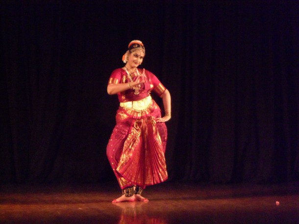

The 8 classical dance styles of India!

BHARATNATYAM
Bharata Natyam (Tamil: பரதநாட்டியம்) (Telugu: భరత నాట్యం),also spelled Bharatanatyam, is a classical Indian dance form that originated in the temples of Tamil Nadu. This dance form denotes various 19th- and 20th-century reconstructions of Sadir, the art of temple dancers called Devadasis
» Read More
KATHAK
This dance form origin from the groups of poets of ancient northern India, known as Kathaks, or story tellers. These poets, performing in village squares and temple courtyards, mostly specialized in recounting mythological and moral tales from the scriptures.
» Read More
KATHAKALI
Kathakali is one of the oldest theatre forms in the world. It originated in the area of southwestern India now known as the state of Kerala. Kathakali is a group presentation, in which dancers take various roles in performances traditionally based on themes from Hindu mythology.
» Read MoreKuchipudi
Kuchipudi is one of the well-known Classical Indian Dance form from Andhra Pradesh, India. The name Kuchipudi has origin from the name of a village “KUCHELAPURAM” with resident Brahmins practicing this traditional dance form at Andhra pradesh.
» Read More
MANIPURI
Manipuri is one of the most beautiful dance styles of India. Nurtured in the mountainous region of the northeast, it takes its name from the name of the place Manipur, which is now a state. Manipur literally means a jewel of a land, and the state is set like a gem in the verdant hills.
» Read More
MOHINIATTYAM
The dance form of Mohiniattyam was nurtured in the region of Kerala in southwestern India. The name Mohiniattyam literally means ‘Dance of the Enchantress,’ and it does have a mesmerizing quality.
» Read More-798153.jpg)
Odissi
Odissi has origininated from ancient northern India. The name Odissi refers to the dance style of the state of Orissa in eastern India. Like other classical arts of India Oddisi also face difficulties to survive and by the 1930s and 40s, there were very few surviving practitioners of the art.
» Read More
SATTRIYA
Sattras are the Vaishnava monasteries in Assam. The saint poet Shankar Deva of the 15th century AD started this institution to bring harmony to the region of Assam through religion, creating forms of dance-dramas, music, painting and collective prayer.
» Read More